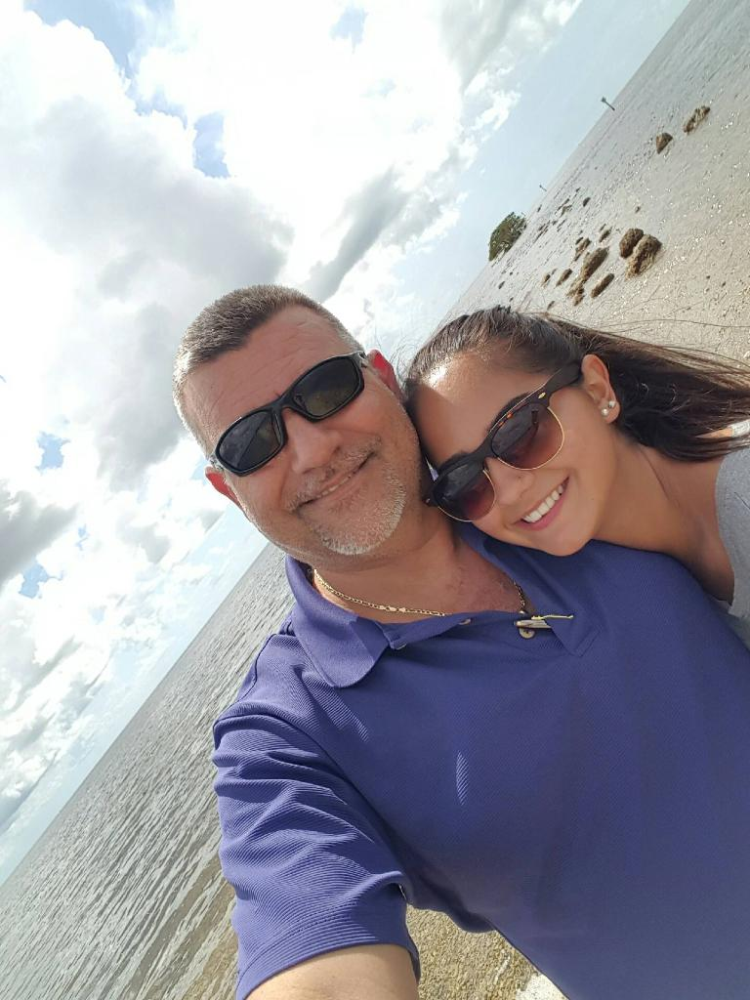

<!DOCTYPE HTML PUBLIC "-//W3C//DTD HTML 4.01//EN" "http://www.w3.org/TR/html4/strict.dtd">
<html lang= "en">
<style type="text/css">
  body { background-color:lightblue
    font-family: Arial }
<head>
  <title>Welcome!</title>
<p></p>
<h1><span style="color:orange;">Introduction</span></h1>
<p style="text-align: justify;">Hello! Welcome to my very first webpage. First, I will introduce the basics about myself. My name is <em>Sabrina Jimenez</em>. I am nineteen-years-old. I am a sophomore at the University of Georgia.&nbsp;<strong>Go dawgs!</strong>&nbsp;I am a Risk Management and Insurance major at the Terry College of Business. When I graduate, I want to pursue a career as an actuary. I was born in Maracay, Venezuela and I've moved around a few times since then.</p>
<h2><span style="color:orange;">Places I've Lived</span></h2>
<table>
<tbody>
<tr>
<th>Location</th>
<th>Years Lived</th>
</tr>
<tr>
<td><a href="https://www.britannica.com/place/Maracay"> Maracay, Venezuela </a></td>
<td>3</td>
</tr>
<tr>
<td>Miami, FL</td>
<td>3</td>
</tr>
<tr>
<td>Keene, NH</td>
<td>8</td>
</tr>
<tr>
<td>Kennesaw, GA</td>
<td>3</td>
</tr>
<tr>
<td>Athens, GA</td>
<td>2</td>
</tr>
</tbody>
</table>
<h2><span style="color:orange;">Family</span></h2>
<p style="text-align: justify;">My mother's name is <span style="text-decoration: underline;">Adriana</span>, and my father is <span style="text-decoration: underline;">Peter</span>. I have two twin brothers named Al and Gabe, short for <span style="text-decoration: underline;">Alvaro</span> and <span style="text-decoration: underline;">Gabriel</span>. They are 23 years old. Gabe attends Kennesaw State University and Al is in the Air Force reserve in San Antonio, Texas. We also have a dog! His name is <span style="text-decoration: underline;">Pipo</span>!</p>

  
<h2><span style="color:orange;">Sports</span></h2>
<p style="text-align: justify;">I used to run track in New Hampshire for about 4 years. I ran the 400m, 200m, and sometimes the 100m dash. I also ran the 4x400m and 4x100m relays. Additionally, I played volleyball for 3 years at <a href="https://sprayberryathletics.com/teams/2430512/girls/volleyball/varsity"> Sprayberry High School. </a></p>
<h2><span style="color:orange;">Top 3 Favorites:</span></h2>
<h3>Foods</h3>
<ul>
<li>Chicken tenders</li>
<li>Sushi</li>
<li>Avocados</li>
</ul>
<h3>Drinks</h3>
<ul>
<li>Coffee</li>
<li>Orange Juice</li>
<li>Sweet Tea</li>
</ul>
<h3>Restaurants</h3>
<ul>
<li>Chick-fil-A</li>
<li>The Cheesecake Factory</li>
<li>J. Christopher's</li>
</ul>
<h3>Movies</h3>
<ul>
<li>The Blind Side</li>
<li>Ratatouille</li>
<li>21 Jump Street</li>
</ul>
